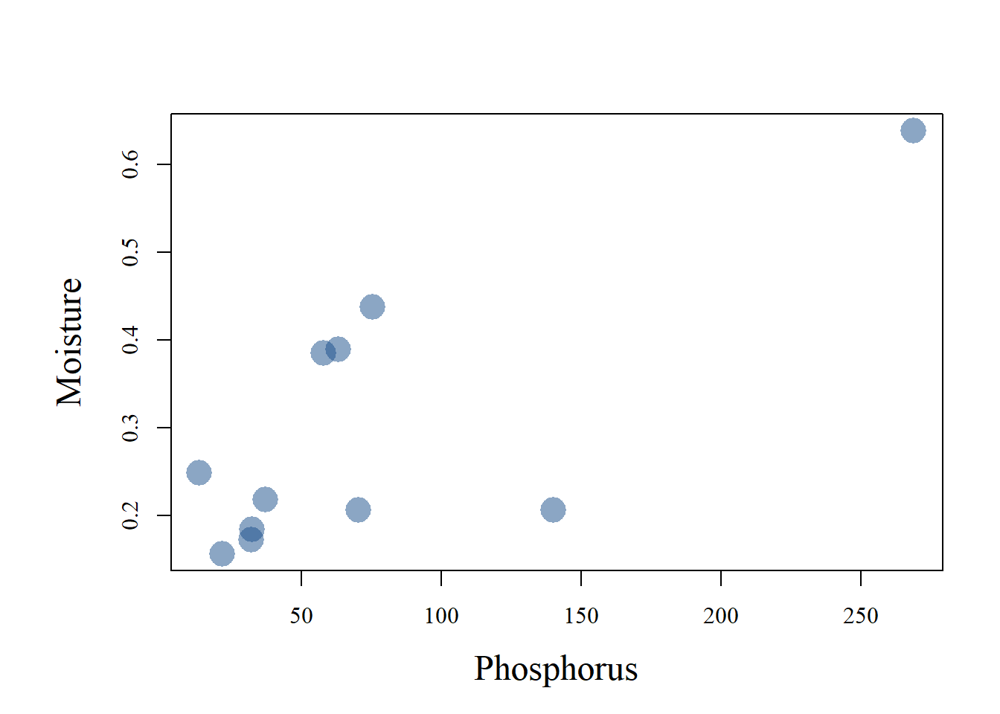

# Create the empty vector of length 10
x=numeric(10)
# Set the first value of the vector to 1
x[1]=1
# do the loop
for(i in 2:10){x[i]=x[i-1]*2}
print(x) [1] 1 2 4 8 16 32 64 128 256 512R is a powerful programming environment. As long as you can handle basic syntax operations. Many packages are built-in to conduct some object transformations, but nothing replaces efficient handling of raw commands. Somewhere down the line, you will want to do something that is not already implemented in a pre-digested tutorial or package.
The very concept of loops is very simple. You have something you want to do in a repetitive manner (\(n\) times), and you don’t want to write down the code \(n\) times. All you have to do is to build a loop that will do that for you! Let’s start simple. Say you have a vector of 10 values. This vector will be called \(x\). For each of these \(i^{th}\) values in \(x\), you want the value to be twice the preceding value. Let’s say you start with x[1] = 1, and you will want x[2] to be 2, x[3] to be 4, and so on… All you have to do is:
# Create the empty vector of length 10
x=numeric(10)
# Set the first value of the vector to 1
x[1]=1
# do the loop
for(i in 2:10){x[i]=x[i-1]*2}
print(x) [1] 1 2 4 8 16 32 64 128 256 512You don’t necessarily have to use \(i\) as your reference letter for the loop! It’s just something commonly done, but you could chose to use any character:
# Create the empty vector of length 10
x=numeric(10)
# Set the first value of the vector to 1
x[1]=1
# do the loop
for(n in 2:10){x[n]=x[n-1]*2}
print(x) [1] 1 2 4 8 16 32 64 128 256 512Or any suite of characters really:
# Create the empty vector of length 10
x=numeric(10)
# Set the first value of the vector to 1
x[1]=1
# do the loop
for(potato in 2:10){x[potato]=x[potato-1]*2}
print(x) [1] 1 2 4 8 16 32 64 128 256 512Your loop also does not need to be run in a continuous manner. Say, for some reason, you would only want to conduct some mathematical operation to a subset of values in your vector. Take, for example, a vector x x=1:10, and a vector y, y=x. Suppose you would like you odd numbers to be twice the value they currently have. So you would like 1 to become 2, 3 to become 6, and so on…
x=1:10
y=x
for(i in c(1,3,5,7,9)){y[i]=2*y[i]}
print(x) [1] 1 2 3 4 5 6 7 8 9 10print(y) [1] 2 2 6 4 10 6 14 8 18 10Or if you want to avoid typing by hand the odd numbers yourself, you can use distillery:
library(distillery)
x=1:10
y=x
for(i in x[is.odd(x)]){y[i]=2*y[i]}
print(x) [1] 1 2 3 4 5 6 7 8 9 10print(y) [1] 2 2 6 4 10 6 14 8 18 10*** This package returns a series of logical as to whether each value in the vector you return is odd, or not.
library(distillery)
x=1:10
print(is.odd(x)) [1] TRUE FALSE TRUE FALSE TRUE FALSE TRUE FALSE TRUE FALSEThen, if you subset the vector x based on this series of TRUES or FALSES:
condition=is.odd(x)
print(x[condition])[1] 1 3 5 7 9applyIn many instances, you will want to repeat a given operation to several rows, or columns, in a matrix. For example, you may have a metacommunity (i.e., a sp \(\times\) sites matrix, with sites as rows). You could be interested in conducting a Hellinger transformation on that matrix. Hellinger transformation is a simple data transformation that transforms relative abundanced into their root-squared values. Let’s first define a function to do it to a single vector:
Hel=function(x){(x/sum(x))^.5}Now, let’s say we have this community of fungi in the roots of this maple seedling, and we want these data “Hellinger-tranformed”:
comm=c(1,13,2,4,8,37,400)
Hel_comm=Hel(comm)
print(Hel_comm)[1] 0.04637389 0.16720344 0.06558258 0.09274778 0.13116517 0.28208136 0.92747779This is simple, but now how to repeat the process for all of our several seedlings we collected in the field, and for which we have the exact same type of communities? We just saw loops, we could easily do it by looping, repeat the Hel function to every single \(i^{th}\) row in our \(i\)-rows metacommunity matrix. Let’s say \(i=5\) (we’re poor and only sampled 5 seedlings), and the number of fungal species detected (number of columns), is 10 (\(j=10\), since general matrix nomenclature uses \(j\) for columns…):
metacom=matrix(c(round(rlnorm(10,1,3)),round(rlnorm(10,1,3)),round(rlnorm(10,1,3)),round(rlnorm(10,1,3)),round(rlnorm(10,1,3))),nc=10,byrow=T)
print(metacom) [,1] [,2] [,3] [,4] [,5] [,6] [,7] [,8] [,9] [,10]
[1,] 0 54 7 1 0 25 36 0 179 5177
[2,] 224 321 269 4039 2 2 64 135 3 1
[3,] 8 0 0 7 41 0 12 10 12 0
[4,] 1 0 69 13 1 1 1 1 2 11
[5,] 182 0 0 491 1 0 5 37 12 2met_hel=metacom
for(i in 1:nrow(metacom)){met_hel[i,]=Hel(metacom[i,])}
print(round(met_hel,digits=2)) [,1] [,2] [,3] [,4] [,5] [,6] [,7] [,8] [,9] [,10]
[1,] 0.00 0.10 0.04 0.01 0.00 0.07 0.08 0.00 0.18 0.97
[2,] 0.21 0.25 0.23 0.89 0.02 0.02 0.11 0.16 0.02 0.01
[3,] 0.30 0.00 0.00 0.28 0.67 0.00 0.37 0.33 0.37 0.00
[4,] 0.10 0.00 0.83 0.36 0.10 0.10 0.10 0.10 0.14 0.33
[5,] 0.50 0.00 0.00 0.82 0.04 0.00 0.08 0.23 0.13 0.05In theory, this works just fine. In practice, whenever you have some tasks that are much more computationnally intensive then this example (e.g., a very large dataset, or a function much more complex), the loop is a time constraint: it’s just slower…What real programmers will advise is to use apply, which can parallelize the tasks:
met_hel2=t(apply(metacom,1,Hel))
print(round(met_hel2,digits=2)) [,1] [,2] [,3] [,4] [,5] [,6] [,7] [,8] [,9] [,10]
[1,] 0.00 0.10 0.04 0.01 0.00 0.07 0.08 0.00 0.18 0.97
[2,] 0.21 0.25 0.23 0.89 0.02 0.02 0.11 0.16 0.02 0.01
[3,] 0.30 0.00 0.00 0.28 0.67 0.00 0.37 0.33 0.37 0.00
[4,] 0.10 0.00 0.83 0.36 0.10 0.10 0.10 0.10 0.14 0.33
[5,] 0.50 0.00 0.00 0.82 0.04 0.00 0.08 0.23 0.13 0.05Basically, here it made no difference, running was fast either way… but sometimes, it’s not impossible that you could benefit of apply. The syntax is very simple, you have:
Hel function, in our case…And that is all there is to it. That simple!
Apply for loopsA very convenient way of using apply is when you work with complex string characters. Even if many good people warn researchers against these sample names that are so deeply coded that it’s very likely to get some mistake introduced during transcription on bottles, bags, excel sheets, etc… people still use some sample code like “East_10_N_night_ww”. You’ll get the same problem with .fastq read files that come back from the sequencing facility, with a long character string provided by the sequencer, and at some point, the sample name YOU gave, and an extension like “[…].R1.fastq.gz”. Say you would like to extract some information of these coded names… Say in your dataset containing your sample that look like “East_10_N_night_ww”, you would only want the samples taken on the East side of the mountain… easy with apply!
names=c("East_20_N_night_ww","East_10_N_night_ww","West_20_N_night_ww","West_10_N_night_ww")
# Sort down individual info with strsplit
x=strsplit(names,"_")
print(x)[[1]]
[1] "East" "20" "N" "night" "ww"
[[2]]
[1] "East" "10" "N" "night" "ww"
[[3]]
[1] "West" "20" "N" "night" "ww"
[[4]]
[1] "West" "10" "N" "night" "ww" OK, strsplit is a VERY HANDY function, I hope you saw that right there!! So at least, if someone convinced you to adopt this sub-par practice of coding your sample names that way, make sure they are coded with codes separated by a standard character, like “_“! This way, you can tease apart these sources of information easily using strsplit, which separates a vector based on set of characters it recognizes within the vector.
Now, in our case, it’s fairly simple, we want to extract the first items for all vectors in this list x of length = 4.
east_west=sapply(x,'[',1)
print(east_west)[1] "East" "East" "West" "West"That’s it! So now, we could simply filter our initial sample names, keeping only those for which east_west=="East"
names[east_west=="East"][1] "East_20_N_night_ww" "East_10_N_night_ww"If we wanted the reverse, we could make use of the very handy exclamation mark (!), which mean NOT:
names[!east_west=="East"][1] "West_20_N_night_ww" "West_10_N_night_ww"And we do get now the West samples! Easy right?
I’m an old school fellow, who missed the dplyr and tidyvers waves. But in the end, while you should definitely master those packages, you could also benefit mastering raw filtering of your datasets based on common commands and logicals. Let’s take this dataset as an example:
data=read.table("../../../Bureau/roofs.txt",header=T)
print(data) site moisture phosphorus pH age habitat rooftype
1 ahuntsic 0.2176 37.32 6.85 14 toit intensif
2 ateliers 0.1561 21.83 7.36 8 toit extensif
3 brebeuf 0.3888 63.45 6.76 10 toit intensif
4 catalyse 0.2790 175.10 6.32 12 toit extensif
5 cirque 0.2482 13.73 6.69 9 toit extensif
6 congres 0.2055 140.25 6.84 8 toit intensif
7 geraldgodin 0.1234 10.16 6.31 20 toit intensif
8 geriatrie 0.5778 168.79 6.08 8 toit extensif
9 iga 0.4939 322.47 6.43 3 toit intensif
10 irbv 0.4420 53.12 6.43 8 toit extensif
11 mcgill 0.1724 32.33 6.64 11 toit extensif
12 meta_ame 0.2883 96.30 6.40 10 toit extensif
13 musee 0.2057 70.65 7.18 2 toit extensif
14 pigeon 0.7234 83.74 6.27 14 toit extensif
15 rayside 0.4345 91.42 6.15 14 toit extensif
16 rosemont 0.3849 58.03 7.01 12 toit extensif
17 santropol 0.6382 269.06 6.51 8 toit intensif
18 saq 0.1841 32.64 6.69 11 toit extensif
19 UdeM_faculte_amenagement 0.4371 75.50 6.93 16 toit extensif
20 maisonneuve 0.3145 17.76 5.89 NA Park <NA>
21 saragay 0.3233 17.63 6.40 NA Park <NA>
22 jarry 0.1997 55.28 6.83 NA Park <NA>
23 royal 0.2401 23.52 6.25 NA Park <NA>
24 angrignon 0.2672 8.93 6.78 NA Park <NA>Now, some filtering will be quite easy. Say you want sites with pH above 6.5:
data[data$pH>6.5,] site moisture phosphorus pH age habitat rooftype
1 ahuntsic 0.2176 37.32 6.85 14 toit intensif
2 ateliers 0.1561 21.83 7.36 8 toit extensif
3 brebeuf 0.3888 63.45 6.76 10 toit intensif
5 cirque 0.2482 13.73 6.69 9 toit extensif
6 congres 0.2055 140.25 6.84 8 toit intensif
11 mcgill 0.1724 32.33 6.64 11 toit extensif
13 musee 0.2057 70.65 7.18 2 toit extensif
16 rosemont 0.3849 58.03 7.01 12 toit extensif
17 santropol 0.6382 269.06 6.51 8 toit intensif
18 saq 0.1841 32.64 6.69 11 toit extensif
19 UdeM_faculte_amenagement 0.4371 75.50 6.93 16 toit extensif
22 jarry 0.1997 55.28 6.83 NA Park <NA>
24 angrignon 0.2672 8.93 6.78 NA Park <NA>This all works on series of TRUEs and FALSEs:
data$pH>6.5 [1] TRUE TRUE TRUE FALSE TRUE TRUE FALSE FALSE FALSE FALSE TRUE FALSE
[13] TRUE FALSE FALSE TRUE TRUE TRUE TRUE FALSE FALSE TRUE FALSE TRUEIf you subset the object data based on this logic vector (here subsetting ROWS, because our logic condition is BEFORE the comma “,”), it will keep only rows for which the condition is set to “TRUE”.
Now, how about a combination of conditions? Say we want sites that are (1) roofs, and (2) have pH > 6.5:
data[data$pH>6.5 & data$habitat=="toit",] site moisture phosphorus pH age habitat rooftype
1 ahuntsic 0.2176 37.32 6.85 14 toit intensif
2 ateliers 0.1561 21.83 7.36 8 toit extensif
3 brebeuf 0.3888 63.45 6.76 10 toit intensif
5 cirque 0.2482 13.73 6.69 9 toit extensif
6 congres 0.2055 140.25 6.84 8 toit intensif
11 mcgill 0.1724 32.33 6.64 11 toit extensif
13 musee 0.2057 70.65 7.18 2 toit extensif
16 rosemont 0.3849 58.03 7.01 12 toit extensif
17 santropol 0.6382 269.06 6.51 8 toit intensif
18 saq 0.1841 32.64 6.69 11 toit extensif
19 UdeM_faculte_amenagement 0.4371 75.50 6.93 16 toit extensif
The possibilities for combinations of conditions is endless, so you can keep enumerating conditions, separated by “&” as you wish…
Now, let’s say, for this subset of your dataset, you would like to correlate moisture with phosphorus:
sub=data[data$pH>6.5 & data$habitat=="toit",2:3]
par(mar=c(5,6,4,2),family="serif")
plot(sub[,1]~sub[,2],pch=21,bg="#174D8A80",col=NA,cex=2.5,xlab="Phosphorus",ylab="Moisture",cex.lab=1.5)